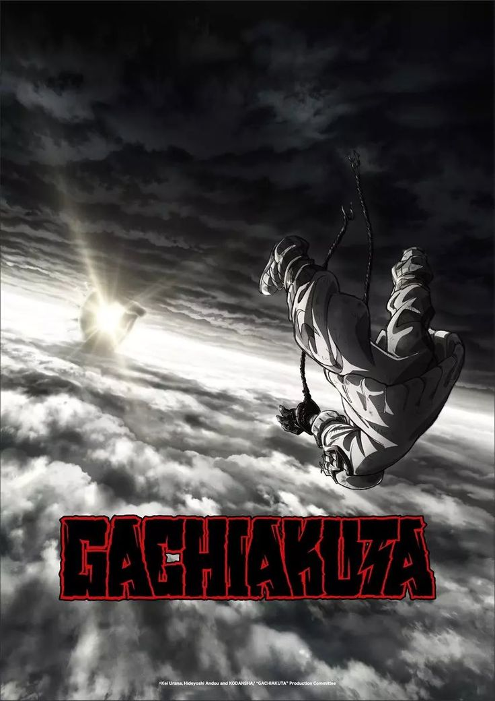

Trending Anime News

Gachiakuta Anime Release Date Confirmed
The anime series "Gachiakuta" is set to premiere in July 2025.Gachiakuta (ガチアクタ) is a Japanese manga series written and illustrated by Kei Urana. It began serialization in Kodansha's Weekly Shōnen Magazine in February 2022. As of March 2025, the series' individual chapters have been collected in 14 tankōbon volumes. An anime television series adaptation produced by Bones Film is set to premiere in July 2025.

Gachiakuta Plot
Rudo, a young boy living in a wealthy society, detests the wastefulness of the upper class, who often dump trash into a dump site called "The Pit." His foster father, Regto, tells him his biological father was dumped there for a crime. After being charged with murder, Rudo swears revenge and is dumped into The Pit. He awakens to a trash-filled landscape and is attacked by trash beasts. Enjin, a Giver, invites Rudo to join the Cleaners, an organization of Givers using unique weapons to hunt trash beasts.